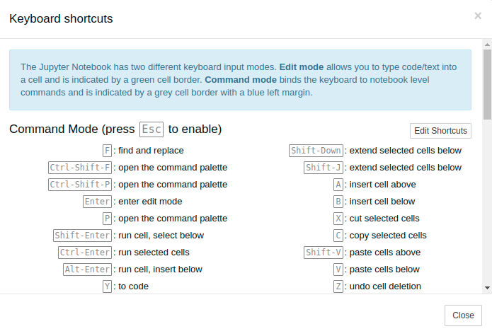

Cài đặt Python
Để lập trình được Python, đầu tiên chúng ta phải cài đặt bộ công cụ phát triển (software development kit - SDK) chứa file thực thi dịch mã nguồn chúng ta viết ra mã mãy để chạy và các thư viện viết sẵn giúp chúng ta sử dụng để tiết kiệm thời gian lập trình. Sau SDK, chúng ta cần môi trường phát triển tích hợp (integrated development environment - IDE) cung cấp công cụ soạn thảo, kiểm lỗi, v.v… trong quá trình lập trình. Có nhiều bộ cài đặt SDK và IDE cho Python khác nhau nhưng trong bài này chúng ta sẽ tìm hiểu bộ Anacoda và Google Colab.
Cài đặt Anaconda
Công cụ Anaconda là cách dễ nhất để cài đặt Python và các thư viện. Với hơn 19 triệu người dùng trên toàn thế giới, Anaconda cung cấp cài đặt Python, quản lý hàng ngàn thư viện phục vụ cho nhiều nhu cầu lập trình khác nhau.
Anaconda hỗ trợ gói cài đặt cho 3 hệ điều hành Windows, Linux và macOS tại đây. Vui lòng chọn đúng gói cài đặt phù hợp với hệ điều hành trên máy của bạn. Với các máy Windows, các bạn chỉ đơn giản thực thi file download và làm theo hướng dẫn. Với các hệ điều hành macOS và Linux bạn có thể thực hiện lệnh bash <file download .sh> ở Terminal và làm theo hướng dẫn:
bash <file download .sh>
Sử dụng Jupyter Notebook
Jupyter Notebook là một ứng dụng web mã nguồn mở cho phép bạn tạo hoặc chia sẻ những văn bản chứa mã nguồn, tài liệu hoặc mô phỏng. Jupyter Notebook là một công cụ tuyệt vời để trải nghiệm khoa học dữ liệu bởi nó có thể giúp chúng ta:
- Học và thử nghiệm với Python
- Xử lý, biến đổi dữ liệu
- Trình diễn, mô phỏng dữ liệu dưới dạng biểu đồ
- Thực hiện mô hình hóa dữ liệu với các thuật toán học máy
Jupyter Notebook được tích hợp sẵn trong Anaconda nên sau khi cài đặt xong Anaconda, chúng ta có thể thực thi Jupyter Notebook bằng cách chọn từ Start Menu trong Windows hay chạy dòng lệnh sau trong Terminal/Command Prompt trên các hệ điều hành:
jupyter notebook
Nếu việc cài đặt thành công, Jupyter Notebook sẽ thực thi và mở 1 trang web cục bộ ở trình duyệt như hình bên dưới:
Chọn New ở góc trên bên phải và chọn Python 3, tab mới được tạo như bên dưới cho chúng ta biết chúng ta đã có một môi trường để viết code và thử nghiệm Python 3 cũng như các dự án Khoa học dữ liệu sau này:

- Một notebook bao gồm nhiều ô (cell). Khi tạo mới một notebook, bạn luôn được tạo sẵn một ô rỗng đầu tiên:
- Ô trên có kiểu là “Code” như trong hình, điều đó có nghĩa là bạn có thể gõ code Python và thực thi ngay lập tức. Để thực thi code, bạn có thể nhấn nút Run cell hoặc nhấn Ctrl + Enter hoặc Shift + Enter để thực thi và mở ô mới.
- Bạn có thể chuyển loại ô từ Code thành Markdown để viết những đoạn văn bản giải thích code của bạn chẳng hạn. Để chuyển đổi bạn click vào ComboBox Code và chọn Markdown như hình:

- Để tiện việc sử dụng notebook, bạn nên tham khảo danh sách các phím tắt bằng việc vào Help-> Keyboard Shortcuts để tham khảo: 
- Đổi tên notebook bằng cách chọn vào tên file để đổi, như trong hình đầu tiên là Untitled5.
- Một trong những chức năng cực hay của Jupyter Notebook là Checkpoints. Bằng cách tạo các Checkpoints lưu trạng thái hiện tại của notebook, Jupyter Notebook cho phép bạn có thể quay lại thời điểm tạo Checkpoints để kiểm tra hoặc hoàn tác trước đó. Để tạo Checkpoint, chọn File -> Save and Checkpoint. Nếu bạn muốn xem lại các Checkpoints trước đó thì chọn File -> Revert to Checkpoint.
- Jupyter Noteboook cho phép bạn export notebook của bạn ra một vài loại file như: PDF, HTML, . . . Để làm được điều đó, bạn chọn File->Download as
Sử dụng Google Colab
Google colab khá giống với Jupyter Notebook nên bạn sẽ không bỡ ngỡ khi sử dụng Colab. Google Colab là dự án miễn phí của Google cung cấp cung cụ giúp chúng ta thực hiện các dự án Khoa học dữ liệu với nguồn tài nguyên của Google. Với những máy tính cá nhân thì việc cần GPU để huấn luyện là chuyện không dễ dàng nên Google Colab giúp chúng ta giải tỏa nỗi lo này.
Google Colab được tích hợp trong Google Drive. Nếu lần đầu bạn sử dụng Colab ở Drive của mình thì bạn cần phải cài đặt nó bằng cách thực hiện các bước sau ở Google Drive của bạn:
- Chọn Mới (New) -> Ứng dụng khác (More) -> Kết nối ứng dụng khác (Connect more apps).
- Tìm kiếm Google Colab và chọn Kết nối (Connect) với ứng dụng Colaboratory tại cửa sổ popup
Bây giờ bạn hãy đến thư mục mà bạn dự định lưu các file được tạo bởi Colab, thực hiện thao tác như ở trên nhưng thay vì kết nối ứng dụng khác thì chúng ta chọn Google Colaboratory có sẵn trong danh sách.
Các chức năng trên Google Colab tương tự như Jupyter Notebook nên tôi để bạn tự khám phá nhé.
Tóm tắt
- Anaconda là bộ công cụ hỗ cài đặt Python và rất nhiều thư viện.
- Jupyter Notebook là trang web chạy local hỗ trợ soạn thảo và thực thi mã Python và có thể lưu thành một báo cáo hoàn chỉnh. Jupyter Notebook đi kèm trong bộ Anacoda.
- Google Colab là công cụ tương tự Jupyter Notebook nhưng được tích hợp sẵn trong Google Drive.